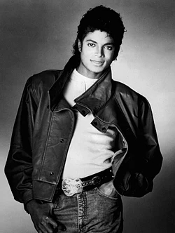

<html></html>
<head>
    <title>Document</title>
</head>
<body>
    <h1>Micheal Jackson</h1>
    <p><b>(MJ)</b></p>
    <P><b> Joseph Jackson</b> (August 29, 1958 – June 25, 2009) was an American <mark>songwriter, dancer, and philanthropist.</mark> Dubbed the <b>"King of Pop"</b>, he is widely regarded as one of the most culturally significant figures of the 20th century. Over a four-decade career, his musical achievements broke American racial barriers and made him a dominant figure worldwide. Through his songs, concerts, and fashion, he proliferated visual performance for artists in popular music, popularizing street dance moves such as the moonwalk, the robot, and the anti-gravity lean. Jackson is often deemed the greatest entertainer of all time.[nb 1]

The eighth child of the Jackson family, Michael made his public debut at age six as the lead singer of the Jackson 5, one of Motown's most successful acts. He rose to solo stardom with the album Off the Wall (1979) and achieved unprecedented global success with Thriller (1982), the best-selling album in history. Its short film-style music videos for "Thriller", "Beat It", and "Billie Jean" redefined the medium as an art form. Jackson followed it with Bad (1987), the first album to produce five US Billboard Hot 100 number-one singles: "I Just Can't Stop Loving You", "Bad", "The Way You Make Me Feel", "Man in the Mirror", and "Dirty Diana". His next two albums Dangerous (1991) and HIStory (1995) explored socially conscious themes while Invincible (2001) delved into more personal topics.

From the<mark>mid-1980s,</mark> Jackson came under public scrutiny due to changes in his appearance, relationships, behavior, and lifestyle. He was accused of sexually abusing the child of a family friend in 1993. In 2005, Jackson was tried and acquitted of further such allegations and other charges. In 2009, while preparing for This Is It, a series of comeback concerts, he died from an overdose of propofol administered by his personal physician Conrad Murray, who was convicted of involuntary manslaughter in 2011. Jackson's death triggered global reactions, creating unprecedented surges of internet traffic and a spike in his music sales. His televised memorial service, held at the Staples Center in Los Angeles, is estimated to have been viewed by more than 2.5 billion people.</P> 
<a href="https://en.wikipedia.org/wiki/Michael_Jackson"><button>more</button></a>
</html>